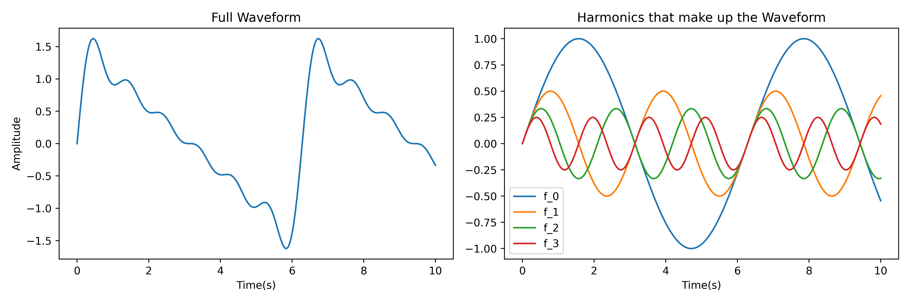

So, when I picked up a guitar and went to play some random note, I wondered how the note I played was an 'E' or a 'C' but on another instrument the same note could be played with a different 'sound'. Musicians do an awful job explaining this, but a Fourier Transform does much better.
It turns out a 'note' is something called the fundamental frequency, and the sound of a note from an instrument is a collection of waves added onto this one that are multiples of the fundamental frequency. A diagram serves this a bit more justice.
Key things to 'NOTE' are that the multiples of the fundamental are called 'harmonics', and generally the higher frequency harmonics diminish in amplitude. This diagram demonstrates the wave created from 4 harmonics when the amplitude of each harmonic is divided my whatever multiple frequency it is of the fundamental (red is a quarter of blue but 4 times as frequent).
Now, all an instrument tuner does is a fancy mathematical technique called a fourier transform to go from a waveform to a diagram where it's incredibly easy to read off the fundamental frequency, we call the transformed diagram a spectrogram.
So, we can see quite easily that the strongest line in the spectrogram is around 1600 Hz, and the next line is double that, a good way to validate that you've found the fundamental.
We'd like our fourier transformer to work real-time so we can tune much faster rather than recording, adjusting, rerecording and so on. The fourier transform in this script manages around 0.02s, so we've got an update frequency of around 50 Hz, plenty fast enough to use real-time.